Η νέα εποχή των κανονισμών 2026 σηματοδότησε δραστικές αλλαγές στην αεροδυναμική, στο βάρος και στα υβριδικά συστήματα. Η Williams ακολούθησε τη φιλοσοφία της σειράς FW47 αλλά προσπάθησε να προσαρμοστεί στα ραγδαία εξελισσόμενα δεδομένα. Ακολουθεί μια τεχνική ανασκόπηση σε οκτώ ενότητες, εμπνευσμένη από τα αναλυτικά άρθρα του F1 Stories για το FW47 (2024–25), με βάση τα δημόσια στοιχεία και τα ρεπορτάζ για το FW48.
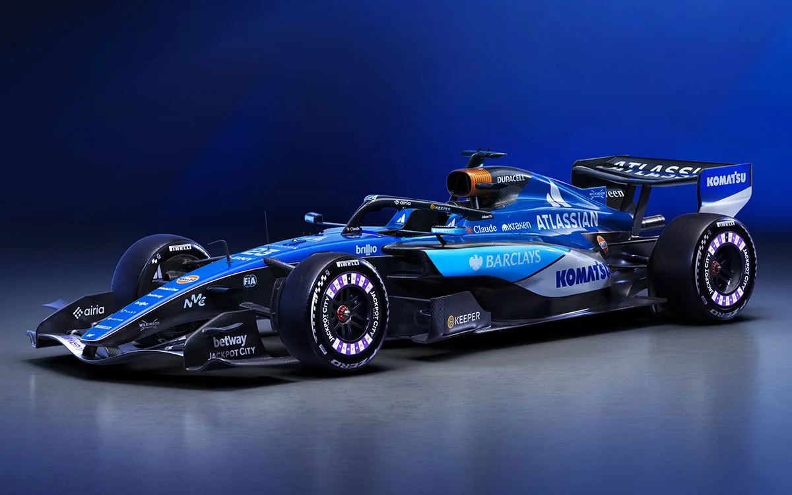
1. Μονοκόκ και Βάρος
Το FW48 βασίζεται σε μονοκόκ ανθρακονημάτων με ενισχυμένους κυψελωτούς πυρήνες από Kevlar. Η δομή ενσωματώνει σημεία ανάρτησης και τη βάση της Halo ώστε να διατηρείται υψηλή ακαμψία, ενώ το βάρος επιτρέπεται να τοποθετείται στρατηγικά μέσω πρόσθετων βαρων. Σύμφωνα με τις επίσημες προδιαγραφές, το αυτοκίνητο ζυγίζει 772,4 kg (με τον οδηγό), δηλαδή μόλις 4,4 kg πάνω από το νέο όριο των 768 kg. Η Williams όμως αντιμετώπισε προβλήματα υπερβάλλοντος βάρους μετά από αποτυχημένα τεστ σύγκρουσης. Δημοσιεύματα έκαναν λόγο για υπέρβαση έως και 20 kg που μπορούσε να κοστίσει ~1 s στον γύρο. Ο James Vowles παραδέχτηκε ότι το σασί χρειάστηκε ενισχύσεις, ενώ οι λύσεις για μείωση βάρους θα εφαρμοστούν προοδευτικά εξαιτίας του ορίου κόστους. Τα 2026 μονοθέσια έχουν κοντύτερο μεταξόνιο (200 mm μικρότερο) και στενότερο δάπεδο, γεγονός που συμπιέζει τον χώρο για εξαρτήματα και απαιτεί έξυπνη συσκευασία.
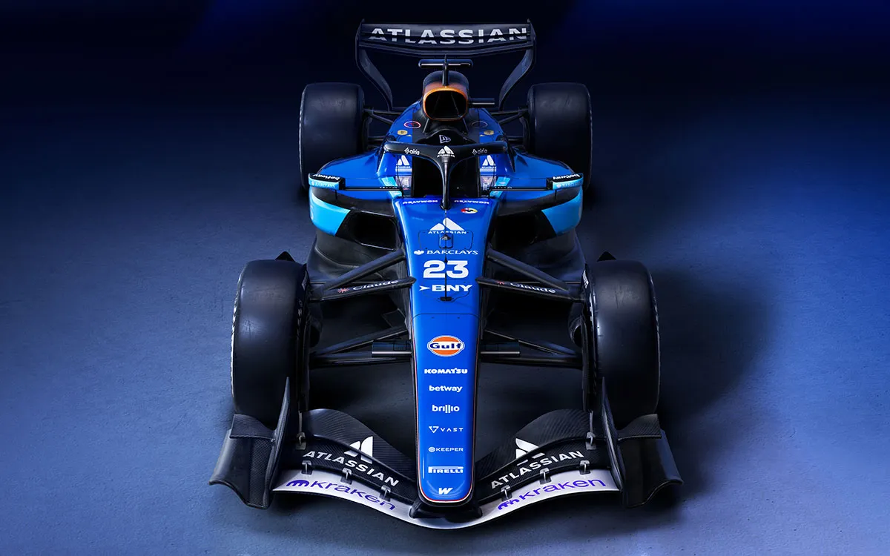
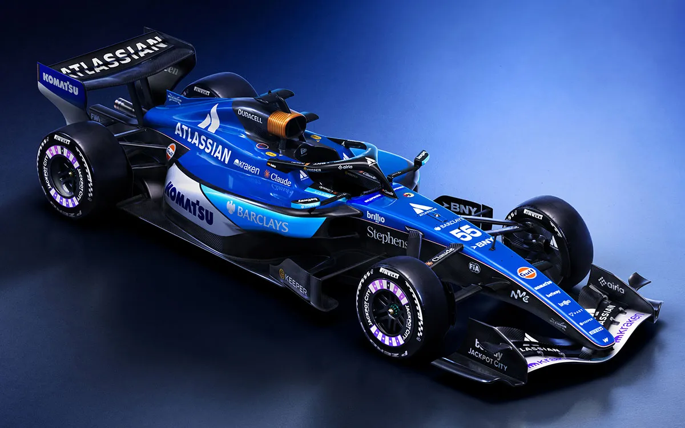
2. Σχεδίαση Ρινός και Αεροδυναμική Οροφής
Οι νέοι κανονισμοί απλοποίησαν τα αεροδυναμικά στοιχεία και εισήγαγαν ενεργές πτέρυγες. Το μπροστινό αεροδυναμικό σύνολο του FW48 διαθέτει πιο κοντή μύτη με τετραπλό στοιχείο και διαχωρισμένους «bargeboards» που κατευθύνουν τη ροή προς το εσωτερικό της πτέρυγας, αντί να εκτρέπουν τον αέρα προς τα έξω όπως παλιότερα. Η ενεργή εμπρόσθια πτέρυγα διαθέτει δύο θέσεις: Straight Mode για ελάχιστο drag στην ευθεία και Corner Mode για μέγιστη κάθετη δύναμη στις στροφές. Στο πίσω μέρος, η πτέρυγα και το beam wing συντονίζονται με το σύστημα διαχείρισης ισχύος (Boost/Overtake) ώστε να μειώνεται η αεροδυναμική αντίσταση κατά το recharge και να αυξάνεται όταν ο οδηγός ζητά επιπλέον ισχύ.
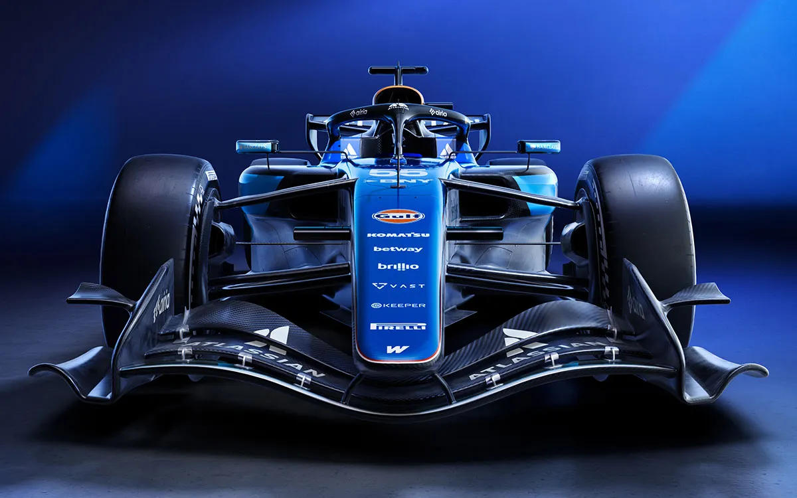
Εικόνα1: Σχέδιο πρόσοψης του FW48, όπου φαίνεται η μικρότερη μύτη, το σύστημα ενεργής πτέρυγας και οι κεκλιμένοι βραχίονες της ανάρτησης (pull‑rod).
3. Πλευρικά τοιχώματα & Δάπεδο
Οι κανονισμοί 2026 περιορίζουν το πλάτος του δαπέδου κατά 100 mm και απαγορεύουν τα βαθιά ground‑effect τούνελ, ώστε να μειωθεί η ευαισθησία σε «dirty air». Το FW48 χρησιμοποιεί πλαϊνούς αεραγωγούς με σχήμα καμπάνα και σχετικά μικρές εισαγωγές για να τροφοδοτούν το ψυκτικό σύστημα της Mercedes M17. Εσωτερικά, τρεις κύκλοι ψύξης (κινητήρα, υβριδικών και κιβωτίου) κατευθύνονται προς το πίσω μέρος μέσω λεπτών καναλιών. Η ομάδα υιοθέτησε θερμικές ζώνες και θερμομονωτικές επενδύσεις (nano‑ceramic heat shields) για περιορισμό της θερμικής διαφυγής, όπως είχε δοκιμάσει στο FW47.
Το δάπεδο είναι επίπεδο με μικρές καμπύλες και χρησιμοποιεί ενεργά στοιχεία (flaps) που αυξάνουν την κάθετη δύναμη στις στροφές ενώ επιτρέπουν χαμηλό drag στις ευθείες. Τα πλαϊνά ανοίγματα λειτουργούν ως κουρτίνες αέρα για τη διαχείριση των vortices. Η απλούστερη μορφή του δαπέδου επιβάλλει υψηλότερη απόσταση από το έδαφος, οπότε η Williams κατεύθυνε σημαντικό μέρος της κάθετης δύναμης προς τα πτερύγια και το διαχύτη.
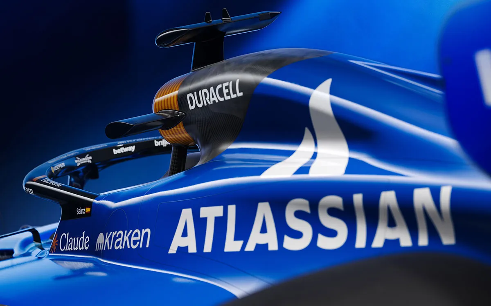
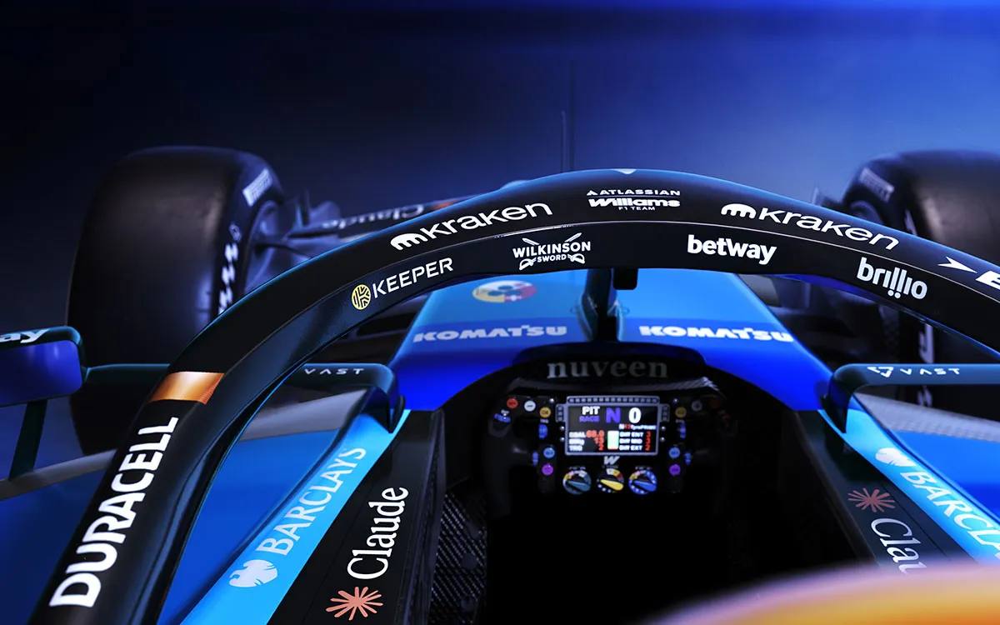
4. Μηχανική Πλατφόρμα: Ανάρτηση και Ρύθμιση
Ένα από τα πιο ιδιαίτερα χαρακτηριστικά του FW48 είναι η επιλογή pull‑rod ανάρτησης εμπρός και push‑rod πίσω. Πρόκειται για τη μοναδική επιλογή συνδυασμού ανάμεσα στις ομάδες· οι περισσότερες επέλεξαν push‑rod και στα δύο άκρα. Η τεχνική έκθεση της ομάδας επιβεβαιώνει ότι η εμπρόσθια ανάρτηση είναι pull‑rod με διπλούς παραλληλόγραμμους βραχίονες, ενώ πίσω η Williams διατηρεί push‑rod με πολλαπλούς βραχίονες. Ο σχεδιασμός αυτός επιτρέπει χαμηλή τοποθέτηση των αμορτισέρ μπροστά ώστε να μειώνεται το κέντρο βάρους και να ελευθερώνεται ο χώρος για τα ενεργά αεροδυναμικά στοιχεία.
Η ανάρτηση είναι πλήρως ρυθμιζόμενη με μηχανισμούς camber/toe που επιτρέπουν διαφορετικές παραμετροποιήσεις για κάθε πίστα, όπως είχαμε δει στο FW47 με χαρτογράφηση γωνιών τροχών για διαχείριση θερμοκρασίας ελαστικών. Το FW48 εκμεταλλεύεται το μειωμένο μεταξόνιο για καλύτερη ευελιξία στις αργές στροφές, αλλά διατηρεί το ρυθμιζόμενο μεταξόνιο μέσω μπαλαστ. Ο Vowles σημείωσε ότι το εμπρόσθιο wishbone είναι «ελαφρώς διαφορετικό» από το συνηθισμένο, δίνοντας αεροδυναμικά οφέλη αλλά αποφεύγοντας τα ριζοσπαστικά σχέδια άλλων ομάδων.
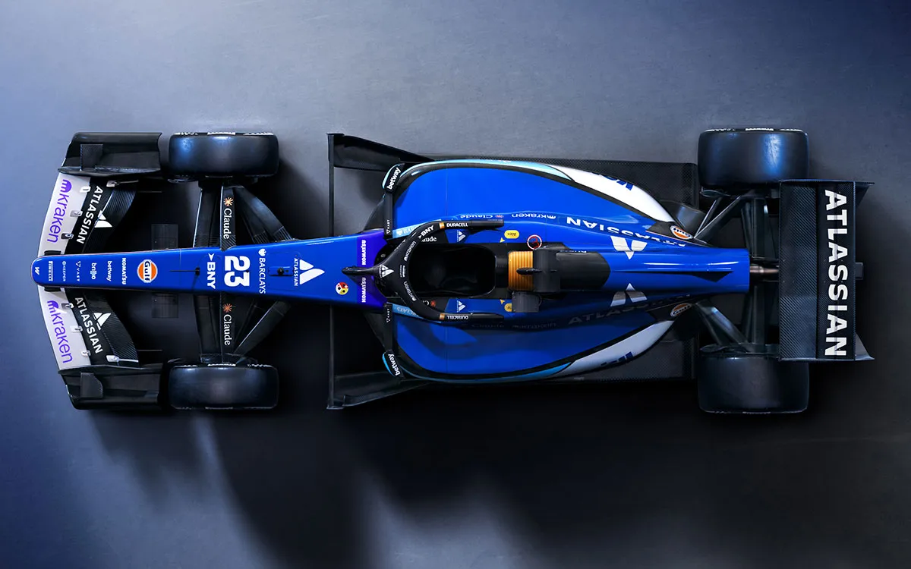
5. Η Καρδιά του FW48 – Κινητήρας και Υβριδικό Σύστημα
Ο Mercedes M17 E Performance παραμένει η καρδιά του μονοθεσίου. Διαθέτει τουρμπο 1,6 L V6 με πλήρως ενσωματωμένη μπαταρία 4 MJ και MGU‑K ισχύος 350 kW (τριπλάσια ισχύς από το 2025). Η MGU‑H έχει καταργηθεί σύμφωνα με τους κανονισμούς 2026, οπότε η Williams έπρεπε να βελτιστοποιήσει την ανάκτηση ενέργειας μέσω του MGU‑K, το οποίο συλλέγει ενέργεια όχι μόνο κατά το φρενάρισμα αλλά και στο «coasting» και στο «super clipping» στο τέλος των ευθειών. Η ηλεκτρική ισχύς αποτελεί περίπου το 50 % της συνολικής απόδοσης, επιτρέποντας στους οδηγούς να χρησιμοποιούν Boost και Overtake Mode για σύντομες αυξήσεις ισχύος ή για επιπλέον ανάκτηση όταν βρίσκονται εντός ενός δευτερολέπτου από προπορευόμενο μονοθέσιο.
Η Williams αντιμετώπισε περιορισμένο χρόνο δοκιμών. Το αυτοκίνητο παρουσιάστηκε καθυστερημένα και έχασε την ιδιωτική δοκιμή στη Βαρκελώνη, κάνοντας την πρώτη του εμφάνιση σε κινηματογράφηση στο Silverstone. Κατά την εποχή, η ομάδα διεξήγαγε εκτεταμένες προσομοιώσεις («Virtual Track Testing») για να διασφαλίσει τη σωστή λειτουργία του συστήματος ψύξης και των υβριδικών κυκλωμάτων. Το κυρίως ψυκτικό σύστημα χρησιμοποιεί τρία κυκλώματα (κινητήρα, υβριδικών/μπαταρίας και υδραυλικού συστήματος), με ενσωματωμένα ψυγεία στο μονοκόκ και στο κάλυμμα κινητήρα, όπως και στο FW47.
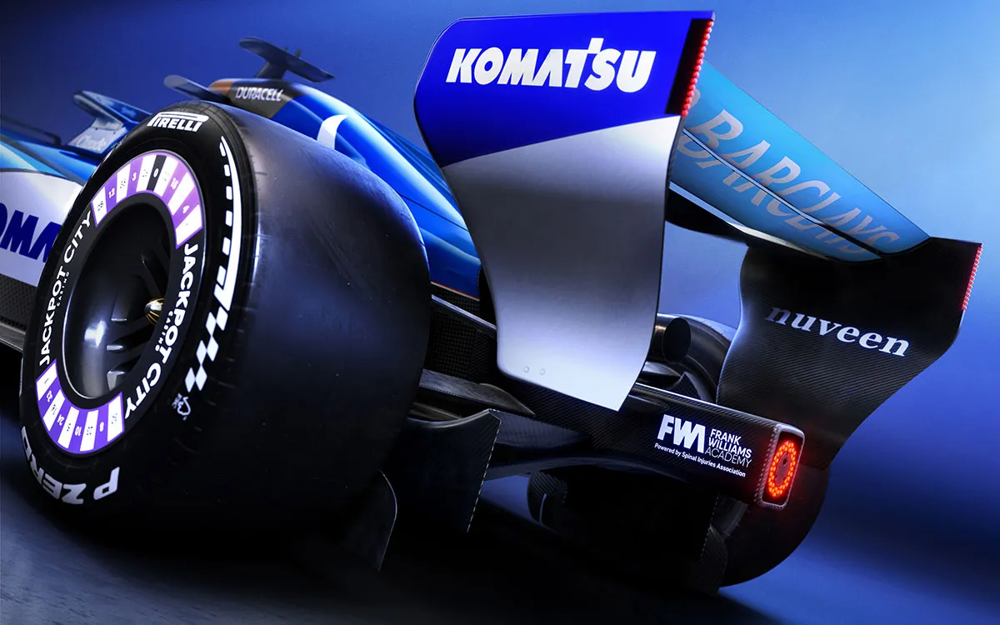
6. Μετάδοση, Κιβώτιο & Υβριδικά Συστήματα
Το FW48 διαθέτει 8‑τάχυτο σειριακό κιβώτιο με γρήγορη αλλαγή και ελαφρύ περίβλημα ανθρακονημάτων, όπως στο Mercedes W17. Η Williams χρησιμοποιεί το πίσω μέρος (κιβώτιο + ανάρτηση) της Mercedes, ενώ διαχειρίζεται το δικό της εμπρόσθιο υποπλαίσιο. Η μετάδοση είναι σχεδιασμένη ώστε να φιλοξενεί το MGU‑K σε χαμηλή θέση για χαμηλό κέντρο βάρους. Ενσωματώνει επίσης τη νέα μονάδα ελέγχου απόδοσης που διαχειρίζεται τις λειτουργίες Recharge, Boost και Overtake. Η αλλαγή σχέσεων είναι χωρίς διακοπή ροπής και το διαφορικό ελέγχεται ηλεκτρονικά για προσαρμογή της κατανομής ροπής σε έξοδο στροφών.
Η Williams διατηρεί το σύστημα brake‑by‑wire για τους πίσω τροχούς, που συνεργάζεται με το MGU‑K ώστε να ανακτά μέγιστη ενέργεια, ενώ ο οδηγός μπορεί να ρυθμίζει την «μετανάστευση φρεναρίσματος» (brake migration) για βέλτιστη ισορροπία στη φάση της πέδησης. Παρά τα πλεονεκτήματα, το υπερβολικό βάρος επηρεάζει τη δυνατότητα ανάκτησης ενέργειας καθώς αυξάνει τον ρυθμό αδρανειακής απώλειας.
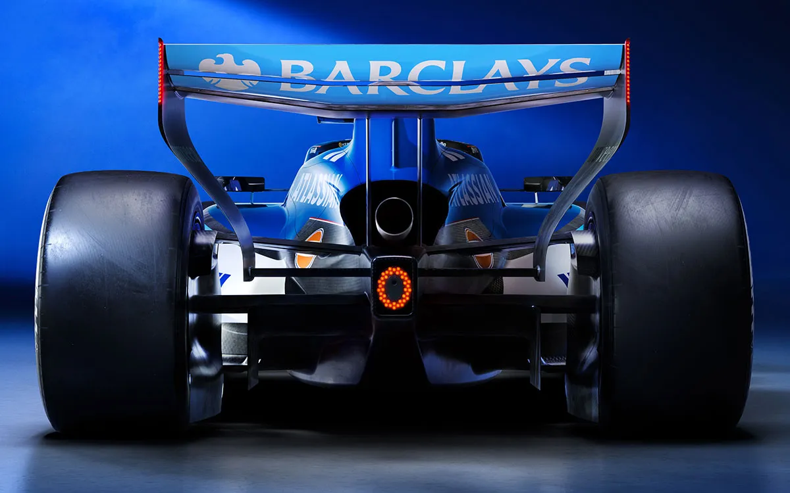
7. Φρένα, Ελαστικά & Κατανομή Βάρους
Όπως και οι προκάτοχοι, το FW48 χρησιμοποιεί δίσκους carbon‑carbon με βελτιωμένη ψύξη, ενώ η ανάρτηση και ο σχεδιασμός του δαπέδου βοηθούν στη διαχείριση θερμότητας των ελαστικών. Οι ρυθμίσεις «camber/toe» και το προσαρμόσιμο βάρος (μπαλαστ) επιτρέπουν αλλαγές στην ισορροπία του αυτοκινήτου στις στροφές. Τα νέα στενότερα ελαστικά (25 mm στενότερα εμπρός, 30 mm στενότερα πίσω) μειώνουν την πλευρική επιφάνεια και απαιτούν προσεκτική διαχείριση θερμοκρασίας.
Η Williams αξιοποιεί χαρτογράφηση μεταφοράς ενέργειας στα ελαστικά, όπως είχε κάνει στο FW47, ώστε ο οδηγός να ρυθμίζει on‑the‑fly την ενέργεια θέρμανσης και να προστατεύει τα Pirelli. Η κατανομή βάρους μεταβάλλεται με τη θέση των συσσωρευτών και μπαλαστ για την εξισορρόπηση της γωνίας κλίσης (yaw) και του βυθίσματος (pitch). Παρά τα περίτεχνα συστήματα, η υπέρβαση βάρους μειώνει την ευελιξία στις ρυθμίσεις και επηρεάζει την κατανομή φορτίου.
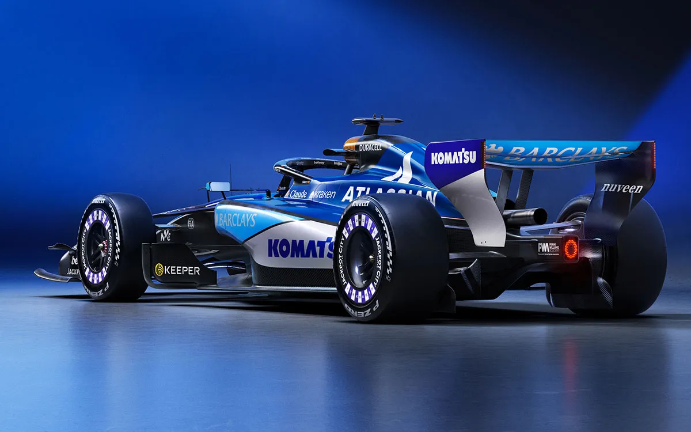
8. Εξέλιξη ή Επανάσταση – Η θέση του FW48 στο 2026
Η Williams επιχειρεί να εξελίξει τις ιδέες του FW47 αλλά η μεγάλη αλλαγή των κανονισμών καθιστά το FW48 ένα ημι-επαναστατικό μονοθέσιο. Συγκριτικά με το FW47, οι σημαντικότερες διαφορές είναι:
| Τομέας | FW47 (2025) | FW48 (2026) |
|---|---|---|
| Μονοκόκ | Βελτιστοποιημένο ανθρακονημάτινο με ενσωματωμένα συστήματα, βάρος ~795 kg. | Μικρότερος, ελαφρύτερος μονοκόκ, επίσημο βάρος 772,4 kg αλλά πιθανές ενισχύσεις οδηγούν σε ~20 kg υπέρβαση. |
| Ανάρτηση | Pull‑rod ή push‑rod ανάλογα με το μοντέλο• αυξημένη ρύθμιση κάμπερ/πόδια. | Μοναδικός συνδυασμός pull‑rod εμπρός και push‑rod πίσω που χαμηλώνει το μπροστινό μέρος και ελευθερώνει χώρο για αεροδυναμικά στοιχεία. |
| Αεροδυναμική | Εξηγμένες ground‑effect τούννελ και πολλά στοιχεία πτερύγων, beam wing με μεταβλητά προφίλ. | Απλοποιημένο δάπεδο, ενεργές πτέρυγες (Straight/Corner Mode) και bargeboards που σπρώχνουν τη ροή προς τα μέσα. |
| Υβριδικό σύστημα | MGU‑H + MGU‑K, συνολική ισχύς ~120 kW από την ηλεκτρική μονάδα. | Χωρίς MGU‑H, η MGU‑K αποδίδει 350 kW και καλύπτει ~50 % της ισχύος• επιτρέπει Boost & Overtake modes. |
| Συμβάσεις καυσίμων | 90 kg/h καύσης, περιορισμένη ανάπτυξη με ERS. | Υποχρεωτικά βιώσιμα καύσιμα με υψηλότερη περιεκτικότητα σε βιοκαύσιμα• η ηλεκτρική ισχύς είναι πιο σημαντική και απαιτεί ακριβή διαχείριση ενέργειας. |
| Στάδιο εξέλιξης | Εξαιρετική βελτίωση του FW47 μέσα στο 2025 με αξιοποίηση κάθετους. | Το FW48 καθυστέρησε, έχασε δοκιμές, εμφανίζει προβλήματα βάρους και χρειάζεται σταδιακές αναβαθμίσεις για να προσεγγίσει τους ανταγωνιστές. |
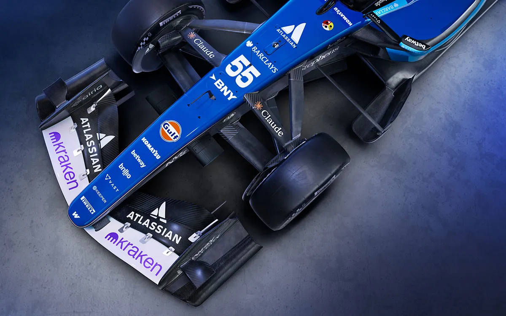
Συμπέρασμα
Η Williams αντιμετωπίζει το 2026 με ένα μονοθέσιο που συνδυάζει καινοτομία και συμβιβασμούς. Ο σχεδιασμός pull‑rod/push‑rod δείχνει διάθεση πειραματισμού, ενώ η χρήση του Mercedes M17 εξασφαλίζει ισχυρή και αξιόπιστη βάση. Οι νέες ενεργές πτέρυγες και το ρυθμιζόμενο υβριδικό σύστημα παρέχουν εργαλεία για μάχη στις ευθείες και στις στροφές. Ωστόσο, το υπέρβαρο σασί και η έλλειψη δοκιμών περιορίζουν την απόδοση• οι πρώτες αναβαθμίσεις θα στοχεύουν στη μείωση βάρους και στην καλύτερη ενσωμάτωση των υβριδικών συστημάτων. Η πορεία του FW48 θα εξαρτηθεί από την ικανότητα της Williams να υλοποιήσει αυτές τις διορθώσεις εντός του ορίου κόστους και να εκμεταλλευτεί τη νέα ρύθμιση των κανονισμών.
Πηγη : https://formula1-data.com/article/williams-unveils-fw48-2026-f1-livery


Comments